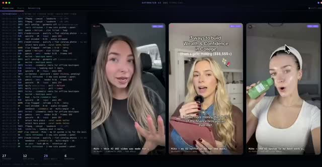

LIQ AI Threads｜Miko 的 Claude Code 全自動 UGC 廣告產線：從產品照到影片與找客戶
LIQ AI Threads｜Miko 的 Claude Code 全自動 UGC 廣告產線
LIQ AI 這則 Threads 的核心觀察是：UGC 廣告不只是「用 AI 生成一支影片」，而是開始被包成一條 agentic pipeline。貼文引用創作者 Miko 在 X 上展示的系統：輸入產品照與一句品牌定位後，自動跑 AI 分身、腳本、旁白、字幕、剪接，一鍵輸出影片；後續還把找客戶、寄信也接進流程。
本文將它視為社群案例與工作流訊號。公開搜尋未能直接找到可驗證的原始 Miko X 貼文，因此不把瀏覽數、成本與完整自動化程度當作已獨立實測事實；但可公開查核的是：Claude Code 可作為工作流控制層，Higgsfield MCP / Kie.ai MCP / Gemini Omni 類工具確實正在把影像、影片生成能力接進 agent 或 API 流程。

Threads 擷取重點
可見主文與作者補充整理如下：
| 類別 | 可見內容 |
|---|---|
| 作者 | `liq_media` / LIQ AI |
| 主題 | 一個人的 Claude Code 腳本搶走廣告代理商部分工作 |
| 案例 | 創作者 Miko 在 X 展示全自動 UGC 廣告產線 |
| 輸入 | 產品照 + 一句話品牌定位 |
| 流程 | 品牌調性分析 → 目標客群畫面 → Claude Vision 細節提示詞 → Gemini Omni 生成帶旁白影片 → 自動字幕與剪接 |
| 工具 | Claude Code、Claude Vision、Gemini Omni、Kie AI MCP 或 Higgsfield MCP |
| 時間/成本說法 | 單支 30 秒廣告設定 3 分鐘、跑完 4–12 分鐘、API 成本 3 美元內；此為貼文轉述，未實測 |
| 延伸 | 系統自動爬 Google Maps 找沒有線上形象的實體店家，成品做完直接寄信給店主 |
圖片可見資訊
封面圖是深色桌面/瀏覽器介面。左側像是程式或 Claude Code 終端日誌，右側有三張 9:16 UGC 風格影片預覽：
- 第一支：車內自拍感女性講話。
- 第二支：手持麥克風/手機的女性，畫面文字可見「3 ways to build Wealth & Confidence in College」。
- 第三支：白衣女性手持綠色產品瓶，像保健品或飲品廣告。
圖片可支持「系統中有多支 UGC 影片預覽與腳本日誌」這個觀察，但不能單靠截圖確認整條產線真的已全自動、成本真的低於 3 美元或已完成寄信。
官方/可靠來源查核
| 能力 | 可公開查核來源 | 判讀 |
|---|---|---|
| Claude Code 作為控制層 | Anthropic / Claude Code 生態與 MCP 使用方式 | 可用來讀寫專案檔、呼叫工具、串接外部 API，適合 orchestration。 |
| Higgsfield MCP | `higgsfield.ai/mcp` | 官方頁明確稱 Higgsfield MCP 可和 Claude、Claude Code 等 agent 使用，做 AI image / video generation。 |
| Kie.ai MCP / CLI | Kie.ai docs、`felores/kie-cli-mcp` GitHub | Kie.ai 文件與社群 MCP server 顯示可把多種影像/影片/音樂/語音 API 接給 MCP clients。 |
| Gemini Omni | Google Gemini video generation / Gemini API Omni docs | Google 官方稱 Gemini Omni 支援文字、圖片、影片、聲音輸入，生成/編輯影片，且有 image-to-video 與 cinematic control。 |
| 找商家 | Google Maps / Places 類資料 | 技術上可用地圖/商家資料做 lead list，但爬取與寄信需注意平台條款、個資與反垃圾信規範。 |
這則值得收錄的原因
- 它把 AI 影片工具從「單次生成」推向「商業流程自動化」。
- 真正的價值不只在畫面，而是把 product research、prompt、影片生成、字幕、剪接、lead generation、outreach 接成閉環。
- 對小團隊而言，這代表 UGC 代理商的低階執行項目會被快速壓縮；但策略、品牌判斷、客戶溝通與合規仍需要人。
欒帥可放進課程的拆解題
- 讓學生畫出 UGC 廣告產線：輸入、模型、工具、人工審核點、輸出。
- 設計一個「不真正寄信」的安全 demo：只生成 lead list 與草稿 email，最後由人確認。
- 加入成本 log：每次影片生成記錄模型、秒數、解析度、retry 次數與費用。
- 加入合規檢查：肖像、聲音、產品功效、平台廣告政策、垃圾信風險。
風險與界線
- 原始 Miko X 貼文未能透過公開搜尋直接驗證，本文不宣稱完整自動化已被獨立確認。
- AI UGC 若使用 AI 分身或合成旁白，應標示合成內容並確認肖像/聲音授權。
- 自動寄信給店家涉及反垃圾信與個資/商業推廣規範，正式使用前需法務與平台政策確認。
- UGC 廣告涉及功效宣稱，健康、美妝、金融產品尤其不能只靠 AI 生成文案。
來源
- LIQ AI Threads：https://www.threads.com/@liq_media/post/DbZPpV9AETA
- Higgsfield MCP：https://higgsfield.ai/mcp
- Kie.ai docs：https://docs.kie.ai/
- Kie.ai MCP server example：https://github.com/felores/kie-cli-mcp
- Google Gemini Omni：https://gemini.google/overview/video-generation/
- Gemini API Omni docs：https://ai.google.dev/gemini-api/docs/omni